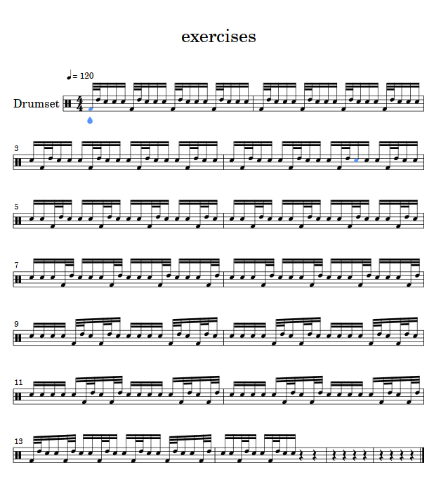

Garibaldi's Foot+Hand doubles
Have a look at the following simple rudiment involving a double stroke

Here the sticking could be single strokes, as in Rr L R L on repeat, or it can also follow the standard "dragadiddle", Rr L R R Ll R L L.
David Garibaldi uses and teaches an interesting concept that replaces the double stroke by a foot+hand combination. This works irrespectively of the above stickings, and the double stroke bomes a foot stroke and a tom stroke. It looks like this:

I wished to study this concept in detail, and in the following I set up some code that produces exercises for me to work on. It also uses a relatively new feature of random_notes_sequence which can weight different patterns with different probabilities, so that they appear more or less frequently.
Textbook exercises
Before we devle into the actual random sequences of this new kind of pattern I create some straight forward exercises that have this pattern in different locations in the bar. For the sticking, I assume the single strokes, so that I also have exercise variants with two foot-hand strokes next to each other.
First, let's define the basic variables necessary for the code.
using MusicVisualizations # re-exports MusicManipulations bass = musescore_drumkey["Acoustic Bass Drum"] snare = musescore_drumkey["Acoustic Snare"] tom = musescore_drumkey["Low-Mid Tom"] midichannel = 9 tpq = 960 sixt = 960 ÷ 4
240
For creating the patterns, one should notice that only two different "motifs" are necessary, one with the foot+hand double stroke and one that is only a single stroke. We can then use clever programming to create all possible combinations.
motif0 = [ Note(snare, 100, 0, sixt, midichannel), ] motif1 = [ Note(bass, 100, 0, sixt÷2, midichannel), Note(tom, 100, sixt÷2, sixt÷2, midichannel), ]
2-element Array{Note,1}: Note B1 | vel = 100 | pos = 0, dur = 120 | channel 9 Note B2 | vel = 100 | pos = 120, dur = 120 | channel 9
The first step is to create some basic exercises that put this double foot+hand stroke into the different possible locations within a quarter note. These variations are 4 in total. In the following we will store them all into a single exercises container, while each exercise will be bars bars long.
bars = 2 exercises = Note[] for j in 1:4 # create the 4 possible variations # Create 1 quarter note of the variations exercise = [translate(motif0, k*sixt) for k in 0:3] exercise[j] = translate(motif1, (j-1)*sixt) exercise = vcat(exercise...) ex0 = copy(exercise) # Repeat to fill one bar with variation. 1 quarter note = 4sixt for k in 1:3; append!(exercise, translate(ex0, 4k*sixt)); end ex0 = copy(exercise) # Repeat as many bars as needed. 1 bar = 16 sixt for b in 0:bars-1; append!(exercise, translate(ex0, 16b*sixt)); end # Add it to the exercises (but translated for the bars) append!(exercises, translate(exercise, (j-1)*bars*16*sixt)) end
We then create a second exrcise type where one quarter note will contain two doubles of foot+hand. There are two ways for this (assuming that we do not want the doubles to be next to each other).
for j in 5:6 exercise = [translate(motif0, k*sixt) for k in 0:7] # repeat it 8 times for m in (j, j+2) exercise[m] = translate(motif1, (m-1)*sixt) end exercise = vcat(exercise...) ex0 = copy(exercise) # Repeat to fill one bar with variation. 1 quarter note = 4sixt # Notice this is a 2 quarter not pattern for k in 1:1; append!(exercise, translate(ex0, 8k*sixt)); end ex0 = copy(exercise) # Repeat as many bars as needed. 1 bar = 16 sixt for b in 0:bars-1; append!(exercise, translate(ex0, 16b*sixt)); end # Add it to the exercises (but translated for the bars) append!(exercises, translate(exercise, (j-1)*bars*16*sixt)) end
Finally, one last exercise with the foot+hand double repeated every three sixteen-th notes.
motif001 = [ Note(bass, 100, 0, sixt÷2, midichannel), Note(tom, 100, sixt÷2, sixt÷2, midichannel), Note(snare, 100, sixt, sixt, midichannel), Note(snare, 100, 2sixt, sixt, midichannel), ] j = 7 exercise = [translate(motif001, 3k*sixt) for k in 0:7] # repeat it 10 times exercise = vcat(exercise...) append!(exercises, translate(exercise, (j-1)*bars*16*sixt)) exercises
392-element Array{Note,1}: Note B1 | vel = 100 | pos = 0, dur = 120 | channel 9 Note B2 | vel = 100 | pos = 120, dur = 120 | channel 9 Note D2 | vel = 100 | pos = 240, dur = 240 | channel 9 Note D2 | vel = 100 | pos = 480, dur = 240 | channel 9 Note D2 | vel = 100 | pos = 720, dur = 240 | channel 9 Note B1 | vel = 100 | pos = 960, dur = 120 | channel 9 Note B2 | vel = 100 | pos = 1080, dur = 120 | channel 9 Note D2 | vel = 100 | pos = 1200, dur = 240 | channel 9 Note D2 | vel = 100 | pos = 1440, dur = 240 | channel 9 Note D2 | vel = 100 | pos = 1680, dur = 240 | channel 9 ⋮ Note D2 | vel = 100 | pos = 50160, dur = 240 | channel 9 Note B1 | vel = 100 | pos = 50400, dur = 120 | channel 9 Note B2 | vel = 100 | pos = 50520, dur = 120 | channel 9 Note D2 | vel = 100 | pos = 50640, dur = 240 | channel 9 Note D2 | vel = 100 | pos = 50880, dur = 240 | channel 9 Note B1 | vel = 100 | pos = 51120, dur = 120 | channel 9 Note B2 | vel = 100 | pos = 51240, dur = 120 | channel 9 Note D2 | vel = 100 | pos = 51360, dur = 240 | channel 9 Note D2 | vel = 100 | pos = 51600, dur = 240 | channel 9
Save a midi file and make a chart

Randomized exercises
Now I want to have random sequences with a foot+hand double stroke springled into random locations. This is easy to do withrandom_note_sequence. However, I want to be sure that a double stroke will never be followed by another double stroke. To ensure this, I define
motif2 = [ Note(bass, 100, 0, sixt÷2, midichannel), Note(tom, 100, sixt÷2, sixt÷2, midichannel), Note(snare, 100, sixt, sixt, midichannel), ]
3-element Array{Note,1}: Note B1 | vel = 100 | pos = 0, dur = 120 | channel 9 Note B2 | vel = 100 | pos = 120, dur = 120 | channel 9 Note D2 | vel = 100 | pos = 240, dur = 240 | channel 9
Recall that motif0 is a normal single stroke. Therefore, I have to randomly mix motif0 and motif2
motifs = Notes.([motif0, motif2], tpq)
2-element Array{Notes{Note},1}: Notes{Note} with 1 notes Notes{Note} with 3 notes
To make the exercise easy, I want the double stroke to not appear more often. This is easily done by adjusting the weight keyword:
rseq, = random_notes_sequence(motifs, 16sixt*16; weights = [4, 1]) rseq
303 Notes with tpq=960 Note D2 | vel = 100 | pos = 0, dur = 240 | channel 9 Note D2 | vel = 100 | pos = 240, dur = 240 | channel 9 Note D2 | vel = 100 | pos = 480, dur = 240 | channel 9 Note D2 | vel = 100 | pos = 720, dur = 240 | channel 9 Note D2 | vel = 100 | pos = 960, dur = 240 | channel 9 Note D2 | vel = 100 | pos = 1200, dur = 240 | channel 9 Note D2 | vel = 100 | pos = 1440, dur = 240 | channel 9 ⋮ Note B1 | vel = 100 | pos = 60240, dur = 120 | channel 9 Note B2 | vel = 100 | pos = 60360, dur = 120 | channel 9 Note D2 | vel = 100 | pos = 60480, dur = 240 | channel 9 Note D2 | vel = 100 | pos = 60720, dur = 240 | channel 9 Note B1 | vel = 100 | pos = 60960, dur = 120 | channel 9 Note B2 | vel = 100 | pos = 61080, dur = 120 | channel 9 Note D2 | vel = 100 | pos = 61200, dur = 240 | channel 9
Finally, I'll make one more exercise where the foot+hand double appears a bit more frequently.
rseq, = random_notes_sequence(motifs, 16sixt*16; weights = [2, 1]) rseq
321 Notes with tpq=960 Note B1 | vel = 100 | pos = 0, dur = 120 | channel 9 Note B2 | vel = 100 | pos = 120, dur = 120 | channel 9 Note D2 | vel = 100 | pos = 240, dur = 240 | channel 9 Note D2 | vel = 100 | pos = 480, dur = 240 | channel 9 Note B1 | vel = 100 | pos = 720, dur = 120 | channel 9 Note B2 | vel = 100 | pos = 840, dur = 120 | channel 9 Note D2 | vel = 100 | pos = 960, dur = 240 | channel 9 ⋮ Note B2 | vel = 100 | pos = 60120, dur = 120 | channel 9 Note D2 | vel = 100 | pos = 60240, dur = 240 | channel 9 Note D2 | vel = 100 | pos = 60480, dur = 240 | channel 9 Note D2 | vel = 100 | pos = 60720, dur = 240 | channel 9 Note B1 | vel = 100 | pos = 60960, dur = 120 | channel 9 Note B2 | vel = 100 | pos = 61080, dur = 120 | channel 9 Note D2 | vel = 100 | pos = 61200, dur = 240 | channel 9